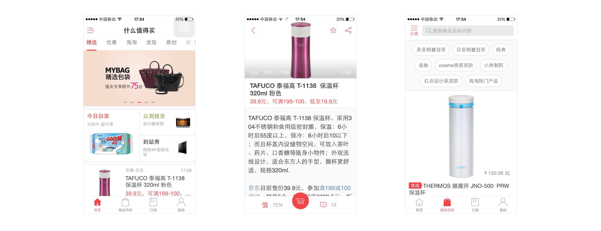
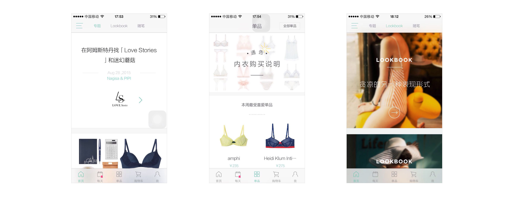

什么值得买&氧气 产品分析
设计任务
例举你最喜欢或者使用最多的2款电商或团购产品。说明你喜欢的原因。并多角度分析它们的优缺点（产品、视觉、交互等方面）。
什么值得买 —— 使用最多的产品
• 很久前就用了什么值得买，它切入市场的方式很自然。从一个论坛帖子开始慢慢做成一个电商导购网站，产品顺势而为。在运作之初就已经有很好的用户基础，通过黏住优质用户，产生优质内容，吸引优质买家，形成了一个良性的UGC生态：用户生产内容，网站审核内容，用户消费内容。
• 客户端覆盖全面，从iphone、Android到iPad、WindowsPhone、iWatch。各个端的设计基本符合了各平台的设计规范。针对商品发现的时效性，设计了chrome和Firefox的浏览器插件，猜测应该也会是一个很大的流量入口。
• 设计上亮点不多。产品定位为一款工具，讲求的是信息的有效呈现。
• 首页栏目多，各个栏目其实有交叉。为什么没有简化结构的设计？推测原因还是因为什么值得买中老用户是一股很重要的优质用户资源，该用户组能产出优质原创内容和而且有高消费力。随着导购、优惠的加入，产品越做越复杂。
• 交互设计可能主要关注在提高操作的效率上，比如在详情页，由于产品的时效性，快速下单购买是刚需，所以在层级上使用了固定的按钮设计，配合动效设计，合理地强化了导向的链接入口。但有些细节可以更加雕琢，比如按钮「值」的设计，在视觉反馈上可以优化，且把「不值」藏在「值」中，设计的引导趋向值得商榷。
• 新的改版中淡化了用户标记「值得」与否的功能，让产品失焦，亮点不多。
• Logo缺乏雕琢，更像一个符号，无法承担类似品牌形象的建立，传达产品核心价值的作用。
• 视觉清爽，合格。
• 综合，我使用这款产品最多，主要在于上面的优质内容。设计上中规中矩。产品野心很大，想包括很多，把很多东西放到这个容器里，产品有点失焦。
氧气 —— 最喜欢的产品
• 氧气是我个人比较喜欢的产品。氧气是一款专注于推荐女性内衣的导购产品。首先女性选购内衣是一个痛点，在国情下，更合适放上网做电商。在这样的领域做垂直细分的产品，很巧，也赚取了噱头。
• 在说产品设计之前，先考察它定位的人群，可以发现，喜欢或有倾向在移动端选购内衣的可能是对生活质量有一定要求的偏高质量的年轻女性用户。针对这样的人群，氧气的设计很聚焦。专题、晒单等功能的设计，从女性用户的心智模型出发，结合优秀的内容编辑运营，让人眼前一亮。
• 内衣的选购，在于讲究。对应在产品上，一方面，内容上用精美的文案和专题吸引用户，另一方面，营造美的产品体验也很关键。产品配色精简，动效配合到位，淡化设计，一：达到一种朴素高端的审美体验；二：将设计淡化成容器，呈现内容。
• 当设计淡化为容器，那照片和文字排版的质量将会非常影响到产品的视觉体验。氧气的图片都质量很高，让人有购买欲，文案做的出色。
• 交互上，有亮点，比如专题内推荐单品的信息组织方式，卡片切换的体验可以优化，但更快速地支持用户浏览专题内的推荐。可以优化的地方在于购买的入口设置，在整个产品的展示中，购买是比较隐藏的，可以考虑随滑动响应，固定在底部等设计，提高转化率。
• 综合，我喜欢这款产品，不只是它的切入点很巧妙，解决了女性用户购买内衣的痛点，也因为它不只是为了购物而生，均衡考虑了女性用户的情感体验，设计出色，让用户买的不只是物品，而是成功地为用户营造了拥有它之后的想象，买的是体验。